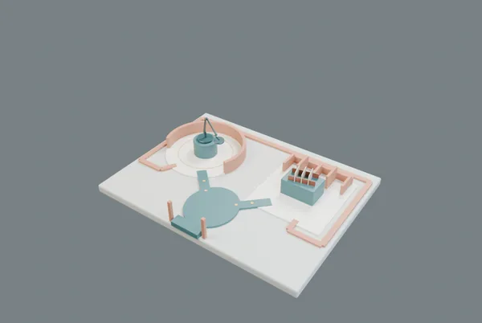
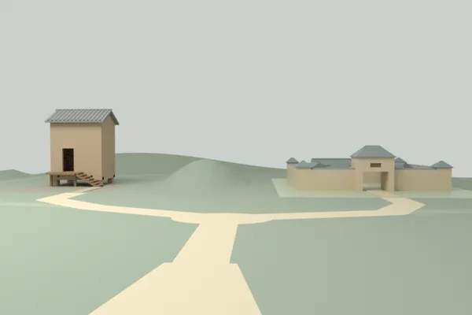
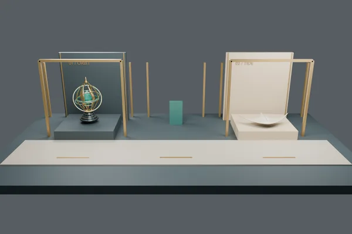
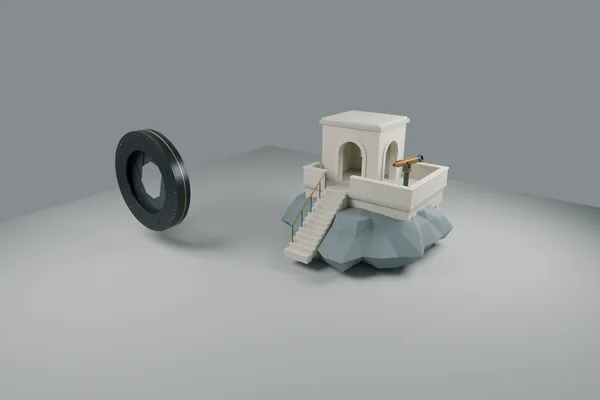
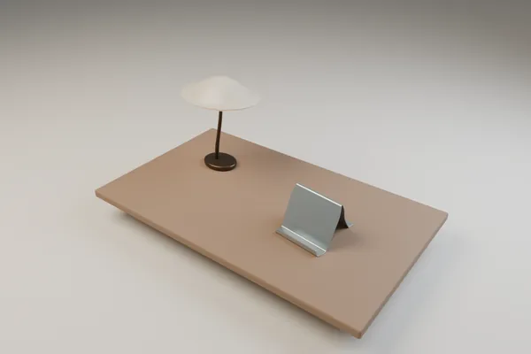
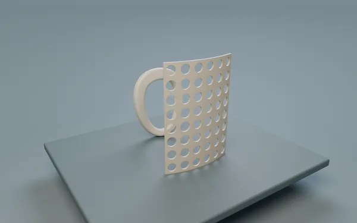

首页 / 作品图录
SPATIAL DESIGN
2个空间原型，4个历史实验；0个用户设计验收通过。公开不等于满足整页空间设计要求。
没有符合条件的项目。清空搜索或选择全部。
无脚本模式：所有条目与下载仍可访问，搜索筛选不可用。

空间原型 · 未完成用户验收
在转动庭比较三个灯臂样本，在插接廊逐级提起中间隔板

从低位入口分岔，在仓前看梯廊、在院门看通隙；主动抬升俯读不同建筑关系

历史实验 · 待重做
让空间承担导航，而不只是容纳模型。序厅、星轨与潮翼三章，始终保留等价的文字阅读路径。

从机械近景走向海岸建筑。抵达、结构、观测三个位置，组织尺度、支点与空间路径三个问题。

一盏灯、一片折面与留白，让同一张桌面成为阅读目录。三个章节共享真实场景，而不只是把两件作品拼成海报。

固定两件物，让遮挡、穿孔与绕行成为同一空间的阅读路径。有限几何替换由独立复用页说明，完整原生变体保存在源包。